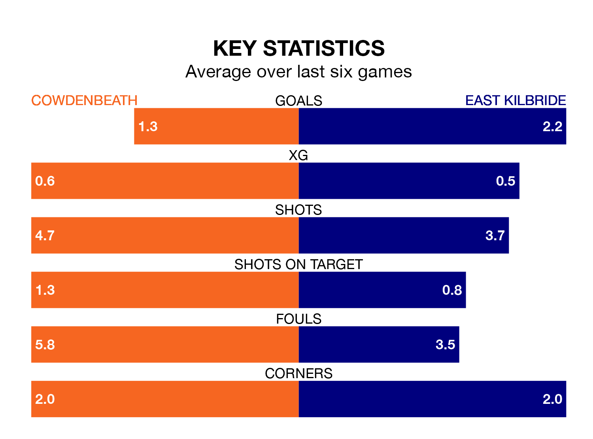

Cowdenbeath host East Kilbride on Saturday at Central Park in the Lowland Football League.
In their last league match, on Wednesday, Cowdenbeath lost to Stirling University 2-1 away.
East Kilbride won, 4-2 at home against Stirling University on January 27.
East Kilbride are top of the table after 23 games, of which they have won 18 and drawn three, earning 57 points.
Cowdenbeath are 11 places behind the Kilby in 12th, with seven wins and nine draws putting them on 30 points.
With 67 goals in 23 games so far this season, the visitors are the league's second-highest scorers with 2.9 goals per game. And they are conceding fewer than average, letting in 27 goals at a rate of 1.2 per game.
The home team, meanwhile, are average scorers, with 1.7 goals per game. They have conceded 1.6 goals per game.
Cowdenbeath are in mixed form in the Lowland Football League, with three wins and a draw from their last six games.
With four wins and a draw over that period, East Kilbride's form is better – they have taken 13 points from 18, compared to Cowdenbeath's 10.
In the last three years, Cowdenbeath and East Kilbride have played each other on three occasions. Cowdenbeath won one of them and East Kilbride the other.
Their last meeting was on August 26, when East Kilbride won 4-2 at home.
Updated: 11:18 (UTC), 08/02/24